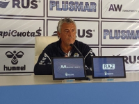

Gimnasia enfrenta a Boca y buscara volver a la pelea.
El jueves desde las 21:30 el tripero recibira a Boca en el Bosque, buscara volver al triunfo que lo meta de nuevo en la carrera por el campeonato, la cual hoy tiene al xeneize como lider y de escolta a Atletico tucuman.
ver mas
Morales, el emblema de este gimnaisa.
El defensor de gimnasia ah sido una muralla en este 2022 y sus numeros hablan por si solos. En gran parte gracias a el el tripero es el equipo con la valla menos vencida del torneo.